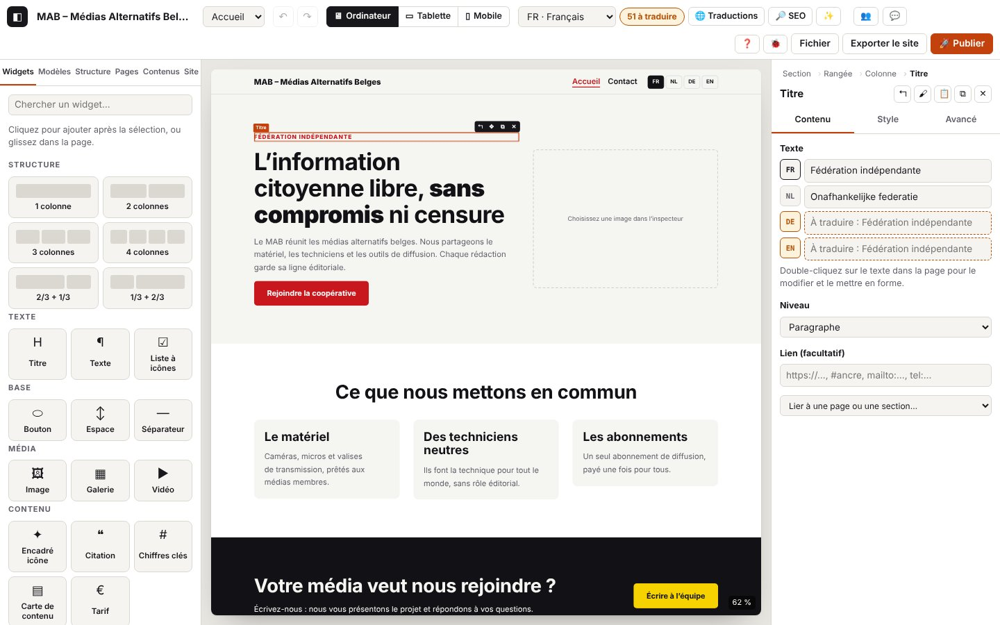

2. Éditer une page

Sur cette page
- 2.1 Afficher la page dans le canevas
- 2.2 Sélectionner un élément
- 2.3 Ajouter un widget (clic)
- 2.4 Glisser-déposer : ajouter, déplacer
- 2.5 Écrire un texte dans la page
- 2.6 Mettre en forme, ajouter un lien, coller
- 2.7 Menu ✨ dans un texte (IA locale)
- 2.8 Copier, couper, coller, dupliquer, supprimer, déplacer
- 2.9 Annuler et rétablir
- 2.10 Sélection multiple
- 2.11 Panneau Structure
- 2.12 Menu contextuel (clic droit)
- 2.13 Barre de commandes (Ctrl+K)
- 2.14 Raccourcis clavier
- 2.15 En-tête et pied de page dans la page
- 2.16 Infobulles des boutons
- 2.17 Élargir les panneaux de gauche et de droite
- 2.18 Tout ce que propose la barre de commandes
- 2.19 Lire la page sur un portable : zoom et panneaux
- 2.20 Listes, intertitres, citation et collage depuis Word
- 2.21 La barre du haut
- 2.22 Déplacer sans glisser : ▲ ▼ et « Déplacer vers… »
- 2.23 Travailler au clavier : onglets, fenêtres, canevas
- Codes de ce chapitre
Le canevas, au centre, montre la page telle qu'elle sera publiée. Tu y sélectionnes les éléments, tu y ajoutes des widgets (clic ou glisser), tu y écris directement les textes, et tu réorganises la page à la souris, au clavier ou dans le panneau Structure.
Domaines du journal
canvas.*: affichage de la page dans le canevas (chargement complet, mise à jour, mise à l'échelle par appareil, défilement), touches tapées dans la page, double-clics.edit.*: écriture d'un texte dans la page (début, fin, longueur du texte, mise en forme, liens, collage, menu ✨).action.*: ajouter, dupliquer, supprimer, couper, copier, coller, déplacer, sélectionner le parent ; refus et leurs raisons.dnd.*: glisser-déposer (début, cible, dépôt accepté ou refusé, annulation).structure.*: panneau Structure (ouvrir, replier, clavier).library.*: bibliothèque de widgets (recherche, clic).ctxmenu.*: menu contextuel (clic droit).widgets.*: chargement des widgets supplémentaires au démarrage.- Déjà journalisés partout (chapitres 0 et 1) et utiles ici :
store.select,store.multi,store.commit,store.undo,store.redo,store.view,store.edit-target(historique et sélection),ui.key,ui.click,ui.toast,ui.dialog.open(touches, clics et fenêtres hors du canevas),cmdk.runetcmdk.fail(barre Ctrl+K).
Le canevas est une page dans la page (une iframe). Les clics et les touches dans le canevas n'apparaissent pas en
ui.click/ui.key: une touche tapée dans la page donnecanvas.key, un clic sur un élément donnestore.select. Tout part du même journal : l'ordre des lignes est l'ordre réel.
2.1 Afficher la page dans le canevas
But : voir la page à jour, à la bonne taille, pour l'appareil choisi.
Étapes
- Ouvre l'éditeur : la première page du site s'affiche dans le canevas.
- Change de page (liste en haut), de langue ou d'appareil (icônes ordinateur, tablette, mobile) : le canevas suit.
Ce que tu vois : la page rendue ; en mode Ordinateur elle prend toute la largeur disponible et n'est réduite que sous 1 040 px (la liste du zoom, en bas à droite, affiche alors par exemple « Ajuster (69 %) » ; voir 2.19).
Journal attendu (démarrage, extrait réel : journaux/edition-canevas-demarrage.log)
Détails techniques : journal attendu
05:10:31.575 +0.01s DEBUG widgets.extra Widgets supplémentaires chargés : 15 {"widgets":23,"extra":15}
05:10:31.587 +0.02s DEBUG canvas.scale Canevas ordinateur : 1280 px, réduit à 62 % {"device":"desktop","width":1280,"scale":62,"available":792}
05:10:31.587 +0.02s INFO canvas.load.start [canvas.load#1] Chargement complet du canevas : premier chargement {"reason":"premier chargement","page":"p_7mv9bc93","lang":"fr","device":"desktop"}
05:10:31.596 +0.03s DEBUG canvas.load.render [canvas.load#1 · 9 ms] Page rendue {"ms":8,"kb":25}
05:10:31.883 +0.31s INFO boot.ok [boot#1 · 307 ms] Éditeur prêt {"page":"p_7mv9bc93","lang":"fr"}
05:10:31.884 +0.32s INFO canvas.load.ok [canvas.load#1 · 297 ms] Canevas prêt {"nodes":30,"scale":62}À vérifier : canvas.load.start (avec la raison) → canvas.load.render (temps de rendu ms, poids kb) → canvas.load.ok avec nodes (nombre d'éléments affichés). canvas.scale donne la largeur réelle de rendu (1280, 820 ou 390 px) et la réduction. widgets.extra confirme que les widgets supplémentaires (formulaire, vidéo, carte…) sont chargés.
Polices ou images en ligne lentes : le canevas est prêt dès que la page est lue (canvas.load.ok avec "via":"dom"), sans attendre les polices Google ni les images en ligne ; l'affichage s'ajuste à leur arrivée. Si elles mettent plus de 3 s, canvas.resources-slow (WARN) donne la durée et les hôtes en cause (par exemple fonts.googleapis.com) ; sinon canvas.resources (DEBUG). Ce n'est pas une panne de l'éditeur : réseau lent, filtre ou bloqueur vers ces hôtes. Avant le cycle 20, ce cas donnait un faux boot.timeout après 15 s.
Ensuite, chaque modification ne recharge pas le canevas : seul le contenu est remplacé (canvas.render, DEBUG). Le canevas n'est rechargé en entier (canvas.load.*) que si la page, la langue, les polices du site ou la cible d'édition (composant, en-tête…) changent.
Variantes
| Situation | Ce qui change à l'écran | Journal |
|---|---|---|
| Modification ordinaire (inspecteur, ajout, suppression…) | la page se met à jour sans clignoter, le défilement est gardé | canvas.render (DEBUG) {"mode":"contenu","source":…} |
| Saisie dans la page, frappe dans un champ, sélecteur de couleur qu'on fait glisser | idem, en continu | canvas.render en TRACE seulement ("mode":"styles" pendant l'écriture dans la page : le texte n'est pas remplacé, le curseur reste) |
| Autre page, autre langue | rechargement complet | canvas.load.start avec "reason":"autre page" ou "autre langue" |
| Police du site changée (panneau Site) | rechargement (pour charger la police) | "reason":"polices du site" (voir 3.8) |
| Modifier un composant, l'en-tête, une carte ; « Terminer » | rechargement sur la partie modifiée, puis sur la page | "reason":"modification du composant", "modification de l’en-tête"…, puis "retour à la page" |
| Deux changements très rapprochés (page puis langue) | un seul affichage, le dernier | canvas.load.cancel (INFO) « Chargement remplacé par un nouveau », puis un nouveau canvas.load.start (journaux/edition-canevas-recharge.log) |
| Appareil changé (🖥 ▭ ▯) | largeur 1280, 820 ou 390 px, réduite si la place manque | store.view {"device":"mobile"} puis canvas.scale (DEBUG) {"device":"mobile","width":390,"scale":100} ; fenêtre redimensionnée : canvas.scale en TRACE |
| Élément sélectionné hors de la vue (ajout, flèches, Structure) | le canevas défile jusqu'à lui | canvas.scroll (DEBUG) {"from":…,"to":…} ; élément masqué (sur cet appareil ou dans cette langue) : canvas.scroll-missing (DEBUG) |
| Un autre participant modifie la page pendant que tu écris dedans | sa modification attend la fin de ta saisie | canvas.remote-deferred (DEBUG), puis canvas.remote-applied (DEBUG) quand tu quittes le texte |
| Bouton dessiné dans le canevas par l'éditeur (pastille de commentaire…) | canvas.ui-action (DEBUG) {"action":…} |
Journal attendu — deux changements rapprochés (journaux/edition-canevas-recharge.log)
Détails techniques : journal attendu
05:10:53.630 +22.06s DEBUG store.view Vue : pageId=p_f0ooet9j {"pageId":"p_f0ooet9j"}
05:10:53.633 +22.06s INFO canvas.load.start [canvas.load#2] Chargement complet du canevas : autre page {"reason":"autre page","page":"p_f0ooet9j","lang":"fr","device":"desktop"}
05:10:53.634 +22.07s DEBUG canvas.load.render [canvas.load#2 · 1 ms] Page rendue {"ms":1,"kb":20}
05:10:53.637 +22.07s DEBUG store.view Vue : lang=nl {"lang":"nl"}
05:10:53.640 +22.07s INFO canvas.load.cancel [canvas.load#2 · 7 ms] Chargement remplacé par un nouveau {"reason":"autre langue"}
05:10:53.640 +22.07s INFO canvas.load.start [canvas.load#3] Chargement complet du canevas : autre langue {"reason":"autre langue","page":"p_f0ooet9j","lang":"nl","device":"desktop"}
05:10:53.641 +22.07s DEBUG canvas.load.render [canvas.load#3 · 1 ms] Page rendue {"ms":0,"kb":20}
05:10:53.905 +22.34s INFO canvas.load.ok [canvas.load#3 · 265 ms] Canevas prêt {"nodes":5,"scale":62}
05:10:53.919 +22.35s DEBUG store.view Vue : lang=fr {"lang":"fr"}
…Erreurs
| Situation | Message affiché | Journal | Que faire |
|---|---|---|---|
| Le rendu de la page échoue (projet incohérent, bogue) | le canevas garde l'ancienne image ; souvent un message d'erreur | canvas.render-fail (ERROR) avec error, puis canvas.load.fail (ERROR) si c'était un chargement complet | Ctrl+Z pour revenir à l'état précédent ; envoie le journal |
| Le canevas se charge vide (iframe bloquée par une extension ou une politique du navigateur) | canevas blanc | canvas.load.fail (ERROR) « Canevas chargé sans contenu » | désactive les extensions qui bloquent les iframes ; recharge la page |
| Un calque (présence d'un autre participant, pastilles de commentaires) plante | le calque n'apparaît plus, le reste fonctionne | canvas.overlay-fail (WARN, une fois ; ensuite TRACE) avec error | envoie le journal |
Navigateur trop ancien (pas de ResizeObserver dans le canevas) | les cadres de sélection se replacent seulement au défilement | canvas.no-resize-observer (WARN) | mets le navigateur à jour |
Fichier core/widgets-extra.js ancien ou manquant sur le serveur | certains widgets manquent dans la bibliothèque | widgets.missing (WARN) avec la liste | recharge sans cache (Ctrl+Maj+R) ; vérifie que tous les fichiers de l'éditeur sont à jour |
2.2 Sélectionner un élément
But : choisir l'élément à régler ou à déplacer.
Étapes
- Clique sur un élément de la page (ou sur sa ligne dans le panneau Structure).
- Les flèches parcourent la page : ↑ / ↓ élément précédent / suivant, ← parent, → premier enfant.
- Échap remonte au parent (widget → colonne → rangée → section).
Ce que tu vois : un cadre orange autour de l'élément (bleu pour une section, vert pour une rangée, violet pour une colonne), sa barre ↰ ✥ ⧉ ✕, et ses réglages dans l'inspecteur.
Journal attendu (clic, flèche ↓, Échap : journaux/edition-selectionner.log)
Détails techniques : journal attendu
05:10:32.512 +0.94s DEBUG store.select Sélection : heading {"id":"n_2l6m0w3e5i","type":"heading"}
05:10:32.706 +1.14s DEBUG store.select Sélection : text {"id":"n_4y660b0u1y","type":"text"}
05:10:32.867 +1.30s DEBUG canvas.key Raccourci dans la page : Escape {"key":"Escape","in":"page","selected":"n_4y660b0u1y"}
05:10:32.868 +1.30s DEBUG action.parent Parent sélectionné : column {"from":"text","to":"column","id":"n_2e4h0v2s04"}
05:10:32.868 +1.30s DEBUG store.select Sélection : column {"id":"n_2e4h0v2s04","type":"column"}À vérifier : chaque sélection donne store.select avec le type ; Échap donne canvas.key puis action.parent (from → to). Les flèches ne donnent pas de ligne canvas.key en mode normal (TRACE), seulement le store.select qui suit.
Variantes
| Situation | Ce qui change à l'écran | Journal |
|---|---|---|
| Échap sur une section | rien (une section n'a pas de parent sélectionnable) | action.parent-none (DEBUG) (journaux/edition-selectionner-section.log) |
| Bouton ↰ de la barre de l'élément | parent sélectionné | canvas.toolbar (DEBUG) {"act":"parent"} puis action.parent |
| Clic sur une ligne du panneau Structure | idem, le canevas défile jusqu'à l'élément | ui.click puis store.select, éventuellement canvas.scroll |
| Clic dans le vide du canevas | plus rien de sélectionné, l'inspecteur affiche l'aide | store.select « Sélection vidée » |
| Raccourci sans sélection (Échap, Ctrl+D…) | rien | action.none (DEBUG) {"action":…} |
| Maj+clic | sélection multiple (2.10) | store.multi |
Erreurs : aucune attendue. Si un clic ne sélectionne rien alors qu'un élément est visible, copie le journal : on doit y voir store.select avec "asked" (élément introuvable).
2.3 Ajouter un widget (clic)
But : ajouter un titre, un texte, un bouton, une image… à la page.
Étapes
- Sélectionne l'élément après lequel ajouter (sinon le widget va à la fin de la page).
- Panneau de gauche « Widgets » : clique sur le widget. Le champ « Chercher un widget… » filtre la liste.
Ce que tu vois : le widget apparaît juste après la sélection, sélectionné, et le canevas défile jusqu'à lui.
Journal attendu (journaux/edition-ajouter-clic.log)
Détails techniques : journal attendu
05:10:33.504 +1.94s DEBUG library.insert Bibliothèque : clic sur « Bouton » {"type":"button","how":"clic"}
05:10:33.506 +1.94s DEBUG store.commit Modification {"source":"library","past":1,"page":"p_7mv9bc93"}
05:10:33.509 +1.94s DEBUG canvas.render Canevas mis à jour sans rechargement (en-tête, contenu, pied, styles) {"source":"library","mode":"contenu","ms":2}
…
05:10:33.515 +1.95s DEBUG store.select Sélection : button {"id":"n_5x206n134e","type":"button"}
05:10:33.517 +1.95s INFO action.add Widget ajouté : Bouton {"type":"button","id":"n_5x206n134e","parentType":"column"}
…À vérifier : library.insert (le clic) → store.commit ("source":"library") → store.select → action.add avec le type et parentType (où il a été placé). Les lignes version.* (première modification du jour : version de sécurité, chapitre 4) peuvent s'intercaler.
Variantes
| Situation | Ce qui change à l'écran | Journal |
|---|---|---|
| Une structure (« 2 colonnes »…) | une section avec ses colonnes, après la section sélectionnée | library.insert {"type":"section","spans":"6-6"} puis action.add-section (INFO) {"spans":[6,6]} |
| Recherche « vid » | la liste se réduit | library.search (DEBUG, à la sortie du champ) {"q":"vid","shown":1} ; chaque lettre : TRACE |
| Recherche sans résultat | liste vide | library.search-empty (DEBUG), une fois (journaux/edition-bibliotheque-recherche.log) |
| Par la barre Ctrl+K (« Ajouter : … ») | idem | cmdk.run {"id":"add:…"} puis action.add (2.13) |
| En glissant le widget dans la page | à l'endroit lâché | dnd.* (2.4) |
Erreurs
| Situation | Message affiché | Journal | Que faire |
|---|---|---|---|
| L'élément ne peut pas aller là (règle de structure) | message rouge expliquant la règle | action.refused (WARN) {"action":"ajouter","error":…} puis ui.toast (ERROR) | sélectionne une colonne ou une section, puis recommence |
| Mode relecture | « Mode relecture… » | store.readonly (WARN) ; pas de ligne action.add | quitte le mode relecture (chapitre 11) |
2.4 Glisser-déposer : ajouter, déplacer
But : placer un widget, une structure, un modèle ou un composant à l'endroit exact voulu ; déplacer un élément existant.
Étapes
- Ajouter : glisse un widget de la bibliothèque (ou un modèle, un composant) dans la page.
- Déplacer : sélectionne l'élément, puis glisse-le (ou glisse sa poignée ✥) ; ou glisse sa ligne dans le panneau Structure.
- Une ligne bleue montre où il sera déposé ; lâche. Échap annule.
Ce que tu vois : une vignette suit la souris ; la ligne bleue (ou un cadre pointillé pour un conteneur vide) indique la place ; après le dépôt, l'élément est sélectionné. Un widget lâché sur la page elle-même (page vide, ou marge entre deux sections) reçoit sa propre section, exactement comme le clic dans la bibliothèque. Au-dessus d'un endroit interdit, la vignette devient rouge et barrée (⊘).
Journal attendu — ajouter en glissant (journaux/edition-ajouter-glisser.log)
Détails techniques : journal attendu
05:10:34.331 +2.76s INFO dnd.start [dnd#1] Glisser : Bouton {"kind":"widget","type":"button","from":"bibliothèque"}
05:10:34.740 +3.17s DEBUG store.commit Modification {"source":"dnd","past":2,"page":"p_7mv9bc93"}
05:10:34.746 +3.18s DEBUG canvas.render Canevas mis à jour sans rechargement (en-tête, contenu, pied, styles) {"source":"dnd","mode":"contenu","ms":3}
05:10:34.755 +3.19s DEBUG store.select Sélection : button {"id":"n_0k0h4v4k17","type":"button"}
05:10:34.756 +3.19s INFO dnd.ok [dnd#1 · 425 ms] Ajouté dans Colonne, position 1 {"id":"n_0k0h4v4k17","type":"button","kind":"new","parentId":"n_3j1z401m2e","parentType":"column","index":0,"where":"canevas"}Journal attendu — déplacer avec la poignée ✥ (journaux/edition-deplacer.log)
Détails techniques : journal attendu
05:10:35.597 +4.03s INFO dnd.start [dnd#2] Glisser : Bouton {"kind":"move","type":"button","id":"n_5x206n134e","from":"page ou structure"}
05:10:35.988 +4.42s DEBUG store.commit Modification {"source":"dnd","past":3,"page":"p_7mv9bc93"}
05:10:35.993 +4.42s DEBUG canvas.render Canevas mis à jour sans rechargement (en-tête, contenu, pied, styles) {"source":"dnd","mode":"contenu","ms":3}
05:10:36.003 +4.43s INFO dnd.ok [dnd#2 · 406 ms] Déplacé dans Colonne, position 1 {"id":"n_5x206n134e","type":"button","kind":"move","parentId":"n_2e4h0v2s04","parentType":"column","index":0,"where":"canevas"}À vérifier : un parcours dnd : dnd.start (kind : widget, section, template, component ou move ; from) → dnd.ok avec parentType, index (à partir de 0) et where (canevas ou structure). Pendant le glisser, chaque nouvel emplacement visé donne dnd.target (TRACE), le défilement automatique près des bords dnd.autoscroll (TRACE) : passe le journal en trace pour les voir.
Variantes
| Situation | Ce qui change à l'écran | Journal |
|---|---|---|
| Réordonner dans le panneau Structure | ligne de dépôt dans l'arbre | dnd.ok avec "where":"structure" (journaux/edition-structure-reordonner.log) |
| Widget lâché sur une page vide ou entre deux sections | cadre pointillé sur la page ; une section (rangée, colonne) est créée autour du widget | dnd.ok « Ajouté dans une nouvelle section » avec "wrapped":true (journaux/premiere-visite-depot-page-vide.log) |
| Glisser un modèle ou un composant | dnd.start {"kind":"template"} / {"kind":"component"} (chapitre 3) | |
| Lâcher à la même place | rien ne change | dnd.cancel (INFO) {"reason":"noop"} |
| Lâcher hors du canevas et de la Structure | rien ne change | dnd.cancel {"reason":"outside"} (journaux/edition-glisser-dehors.log) |
| Échap pendant le glisser | vignette et ligne disparaissent | dnd.cancel {"by":"Échap"} (journaux/edition-glisser-echap.log) |
| Le navigateur interrompt le geste (fenêtre quittée, tactile) | idem | dnd.cancel {"by":"interrompu par le navigateur"} |
| Simple clic (moins de 5 px de mouvement) | c'est un clic : sélection ou ajout | pas de dnd.* |
Erreurs et refus
| Situation | Message affiché | Journal | Que faire |
|---|---|---|---|
| Emplacement interdit (une section sur un widget dans la Structure, un élément dans son propre contenu) | vignette rouge barrée ⊘ ; au lâcher, message « Impossible de déposer ici. … » qui dit où déposer ce type d'élément | dnd.refused (WARN) {"reason":"forbidden"} puis dnd.cancel, puis ui.toast (WARN) (journaux/premiere-visite-depot-refuse.log) | une section va sur la page, une rangée dans une section ou une colonne, une colonne dans une rangée, un widget dans une colonne ou sur la page |
| Le cœur refuse le dépôt au dernier moment | même message | dnd.refused {"reason":"invalid"} puis dnd.cancel, ui.toast | recommence un peu à côté ; si ça se répète, envoie le journal |
| Erreur pendant le dépôt | message rouge | dnd.fail (ERROR) avec error | Ctrl+Z puis envoie le journal |
| L'élément glissé n'existe plus (composant supprimé entre-temps) | rien ne se passe | dnd.unknown (WARN) | rouvre le panneau Modèles |
| Mode relecture | « Mode relecture… » | store.readonly (WARN) puis dnd.cancel {"reason":"readonly"} | — |
Journal attendu — dépôt refusé (journaux/edition-glisser-refuse.log)
Détails techniques : journal attendu
05:10:38.014 +6.45s INFO dnd.start [dnd#5] Glisser : Section {"kind":"move","type":"section","id":"n_43295m1m6y","from":"page ou structure"}
05:10:38.426 +6.86s WARN dnd.refused [dnd#5 · 412 ms] Dépôt refusé : « section » ne peut pas aller à cet endroit (une section va dans la page, un widget dans une colonne, et rien dans son propre contenu) {"type":"section","reason":"forbidden"}
05:10:38.426 +6.86s INFO dnd.cancel [dnd#5 · 412 ms] Rien n’a changé {"reason":"forbidden"}2.5 Écrire un texte dans la page
But : modifier un titre, un paragraphe ou le texte d'un bouton directement dans la page.
Étapes
- Double-clique sur le texte (ou sélectionne l'élément et appuie sur Entrée, ou clic droit → « Modifier le texte »).
- Écris. Un titre ou un bouton se termine par Entrée ; un paragraphe par Échap ou un clic ailleurs.
Ce que tu vois : un contour bleu autour du texte, le curseur dedans ; pour un texte riche, la barre de mise en forme au-dessus : B I U, lien (maillons), listes, Format, effacer, IA locale (étincelle). Toute la saisie compte pour une seule étape d'annulation.
Journal attendu (journaux/edition-texte-titre.log)
Détails techniques : journal attendu
05:10:40.328 +8.76s DEBUG store.select Sélection : heading {"id":"n_2l6m0w3e5i","type":"heading"}
05:10:40.340 +8.77s DEBUG edit.dblclick Double-clic sur un texte de la page {"key":"text","id":"n_2l6m0w3e5i"}
05:10:40.341 +8.77s INFO edit.start [edit#1] Édition dans la page : heading · text {"id":"n_2l6m0w3e5i","type":"heading","key":"text","field":"inline","lang":"fr","chars":56}
05:10:40.511 +8.94s DEBUG canvas.key Raccourci dans la page : Ctrl+A {"key":"Ctrl+A","in":"texte","selected":"n_2l6m0w3e5i"}
05:10:40.519 +8.95s DEBUG store.commit Modification {"key":"edit-n_2l6m0w3e5i-text-1","source":"canvas","past":5,"page":"p_7mv9bc93"}
05:10:40.548 +8.98s DEBUG store.commit Modification (même étape d’annulation) {"key":"edit-n_2l6m0w3e5i-text-1","source":"canvas","merged":true,"past":5,"page":"p_7mv9bc93"}
05:10:40.576 +9.01s DEBUG store.commit Modification (même étape d’annulation) {"key":"edit-n_2l6m0w3e5i-text-1","source":"canvas","merged":true,"past":5,"page":"p_7mv9bc93"}
05:10:40.592 +9.02s DEBUG store.commit Modification (même étape d’annulation) {"key":"edit-n_2l6m0w3e5i-text-1","source":"canvas","merged":true,"past":5,"page":"p_7mv9bc93"}
05:10:40.621 +9.05s DEBUG store.commit Modification (même étape d’annulation) {"key":"edit-n_2l6m0w3e5i-text-1","source":"canvas","merged":true,"past":5,"page":"p_7mv9bc93"}
05:10:40.641 +9.07s DEBUG store.commit Modification (même étape d’annulation) {"key":"edit-n_2l6m0w3e5i-text-1","source":"canvas","merged":true,"past":5,"page":"p_7mv9bc93"}
05:10:40.660 +9.09s DEBUG store.commit Modification (même étape d’annulation) {"key":"edit-n_2l6m0w3e5i-text-1","source":"canvas","merged":true,"past":5,"page":"p_7mv9bc93"}
05:10:40.680 +9.11s DEBUG store.commit Modification (même étape d’annulation) {"key":"edit-n_2l6m0w3e5i-text-1","source":"canvas","merged":true,"past":5,"page":"p_7mv9bc93"}
05:10:40.702 +9.13s DEBUG store.commit Modification (même étape d’annulation) {"key":"edit-n_2l6m0w3e5i-text-1","source":"canvas","merged":true,"past":5,"page":"p_7mv9bc93"}
05:10:40.725 +9.16s DEBUG store.commit Modification (même étape d’annulation) {"key":"edit-n_2l6m0w3e5i-text-1","source":"canvas","merged":true,"past":5,"page":"p_7mv9bc93"}
05:10:40.754 +9.19s DEBUG store.commit Modification (même étape d’annulation) {"key":"edit-n_2l6m0w3e5i-text-1","source":"canvas","merged":true,"past":5,"page":"p_7mv9bc93"}
05:10:40.775 +9.21s INFO edit.ok [edit#1 · 434 ms] Édition terminée : texte enregistré (une seule étape d’annulation) {"id":"n_2l6m0w3e5i","key":"text","changed":true,"chars":11,"before":56,"inputs":11}
05:10:40.779 +9.21s DEBUG canvas.render Canevas mis à jour sans rechargement (en-tête, contenu, pied, styles) {"source":"edit-done","mode":"contenu","ms":3}À vérifier : edit.dblclick → edit.start (parcours edit#n : type, champ key, type de champ field, langue, longueur chars) → des store.commit « même étape d'annulation » (une par lettre) → edit.ok avec changed, chars (longueur finale), before (longueur au début) et inputs (nombre de modifications). Le texte lui-même n'est jamais écrit dans le journal, seulement sa longueur. Chaque lettre donne aussi edit.input (TRACE).
Variantes
| Situation | Ce qui change à l'écran | Journal |
|---|---|---|
| Entrée sur un élément sélectionné, ou menu « Modifier le texte » | l'édition commence sur son premier texte | canvas.key Enter puis edit.keyboard (DEBUG), edit.start |
| Rien changé | edit.ok « Édition terminée sans changement » {"changed":false} | |
| Entrée sur un élément sans texte (image, séparateur, section…) | rien | edit.no-text (DEBUG) |
| Double-clic sur un texte qui se règle seulement dans l'inspecteur | rien dans la page | edit.not-editable (DEBUG) {"field":…} |
| Ctrl+Z pendant l'écriture | l'écriture se termine, puis la saisie entière est annulée | edit.ok, canvas.key Ctrl+Z, store.undo (journaux/edition-texte-annuler.log) |
| Le canevas est rechargé pendant l'écriture (autre page, autre langue) | l'écriture s'arrête ; ce qui était tapé est gardé | edit.cancel (INFO) {"changed":…} |
| Écriture dans une autre langue (liste des langues en haut) | seule cette langue change | edit.start {"lang":"nl"} |
| Écriture dans un composant ou l'en-tête | toutes les utilisations suivent | edit.start {"edit":"component"} |
Erreurs et refus
| Situation | Message affiché | Journal | Que faire |
|---|---|---|---|
| Mode relecture | « Mode relecture : vous pouvez commenter (💬), pas modifier. » | edit.readonly (WARN) | — |
| Texte relié à un champ de collection (dans une carte) | « Ce texte vient du champ « … » de chaque élément… » | edit.bound (WARN) {"field":…,"collection":…} | modifie-le dans Contenus, ou délie-le dans l'inspecteur (chapitre 4) |
| L'élément a été supprimé pendant l'écriture (par un autre participant) | le texte disparaît avec lui | edit.node-gone (WARN) avec error | Ctrl+Z si c'était toi ; sinon, vois avec l'autre personne |
Journal attendu — refus et Entrée (journaux/edition-texte-refus.log)
Détails techniques : journal attendu
05:10:43.044 +11.47s DEBUG store.select Sélection : heading {"id":"n_2l6m0w3e5i","type":"heading"}
05:10:43.058 +11.49s DEBUG edit.dblclick Double-clic sur un texte de la page {"key":"text","id":"n_2l6m0w3e5i"}
05:10:43.058 +11.49s WARN edit.readonly Édition refusée : mode relecture {"id":"n_2l6m0w3e5i","key":"text"}
05:10:43.059 +11.49s INFO ui.toast Message affiché : Mode relecture : vous pouvez commenter (💬), pas modifier.
05:10:43.237 +11.67s DEBUG store.select Sélection : image {"id":"n_525b6p2v6j","type":"image"}
05:10:43.246 +11.68s DEBUG canvas.key Raccourci dans la page : Enter {"key":"Enter","in":"page","selected":"n_525b6p2v6j"}
05:10:43.247 +11.68s DEBUG edit.no-text Rien à écrire dans l’élément sélectionné (pas de texte modifiable) {"id":"n_525b6p2v6j"}
…
05:10:43.388 +11.82s DEBUG store.select Sélection : button {"id":"n_5x206n134e","type":"button"}
05:10:43.396 +11.83s DEBUG canvas.key Raccourci dans la page : Enter {"key":"Enter","in":"page","selected":"n_5x206n134e"}
05:10:43.396 +11.83s DEBUG edit.keyboard Édition demandée au clavier ou par le menu {"id":"n_5x206n134e"}
05:10:43.396 +11.83s INFO edit.start [edit#4] Édition dans la page : button · label {"id":"n_5x206n134e","type":"button","key":"label","field":"text","lang":"fr","chars":14}
05:10:43.553 +11.98s INFO edit.ok [edit#4 · 157 ms] Édition terminée sans changement {"id":"n_5x206n134e","key":"label","changed":false,"chars":14,"before":14,"inputs":0}
…2.6 Mettre en forme, ajouter un lien, coller
But : mettre un mot en gras, en italique, souligné, ou en lien ; coller un texte copié ailleurs.
Étapes
- Pendant l'écriture d'un texte riche, sélectionne quelques mots.
- Clique B, I, U (ou Ctrl+B, Ctrl+I, Ctrl+U), ⌫ pour retirer la mise en forme.
- Lien : 🔗, tape l'adresse, Entrée (Échap abandonne). Sur un lien existant, 🔗 le retire.
- Coller (Ctrl+V) : un texte copié dans Word, Google Docs, LibreOffice ou une page web garde gras, italique, liens, listes et intertitres (le reste est retiré, voir 2.20) ; sans mise en forme utile, il est collé en texte brut.
Ce que tu vois : la mise en forme immédiatement ; le bouton actif est en surbrillance. La sélection de l'élément ne change pas quand tu cliques sur la barre.
Journal attendu (journaux/edition-texte-riche.log)
Détails techniques : journal attendu
05:10:41.109 +9.54s DEBUG store.select Sélection : text {"id":"n_4y660b0u1y","type":"text"}
05:10:41.127 +9.56s DEBUG edit.dblclick Double-clic sur un texte de la page {"key":"content","id":"n_4y660b0u1y"}
05:10:41.127 +9.56s INFO edit.start [edit#2] Édition dans la page : text · content {"id":"n_4y660b0u1y","type":"text","key":"content","field":"richtext","lang":"fr","chars":161}
05:10:41.361 +9.79s DEBUG edit.format Mise en forme : bold (appliquée) {"cmd":"bold","action":"add","chars":6,"where":"page"}
…
05:10:41.499 +9.93s DEBUG edit.format Mise en forme : italic (appliquée) {"cmd":"italic","action":"add","chars":6,"where":"page"}
…
05:10:41.517 +9.95s DEBUG canvas.key Raccourci dans la page : Ctrl+I {"key":"Ctrl+I","in":"texte","selected":"n_4y660b0u1y"}
05:10:41.658 +10.09s DEBUG edit.link-open Champ d’adresse du lien ouvert {"chars":6}
05:10:41.724 +10.15s WARN edit.link-invalid Lien refusé : adresse non autorisée (javascript:alert(1)). Utilise https://, mailto:, tel: ou #ancre {"url":"javascript:alert(1)","where":"page"}
05:10:41.873 +10.30s DEBUG edit.link-open Champ d’adresse du lien ouvert {"chars":6}
05:10:41.895 +10.33s DEBUG edit.format Mise en forme : link (appliquée) {"cmd":"link","action":"add","chars":6,"where":"page","url":"https://exemple.be"}
…
05:10:41.907 +10.34s DEBUG canvas.key Raccourci dans la page : Enter {"key":"Enter","in":"champ","selected":"n_4y660b0u1y"}
05:10:42.029 +10.46s DEBUG edit.paste Collage en texte brut : 26 caractère(s), mise en forme et balises retirées {"chars":26,"lines":2,"rich":true,"inline":false,"where":"page"}
…
05:10:42.147 +10.58s INFO edit.ok [edit#2 · 1020 ms] Édition terminée : texte enregistré (une seule étape d’annulation) {"id":"n_4y660b0u1y","key":"content","changed":true,"chars":188,"before":161,"inputs":4}
05:10:42.150 +10.58s DEBUG canvas.render Canevas mis à jour sans rechargement (en-tête, contenu, pied, styles) {"source":"edit-done","mode":"contenu","ms":3}À vérifier : edit.format donne la commande (bold, italic, underline, link, clear), action (add ou remove), la longueur sélectionnée et where (page ou inspecteur) ; un lien accepté porte son adresse (60 caractères au plus). edit.paste donne la longueur et le nombre de lignes collés, et "rich":true quand le presse-papiers contenait de la mise en forme (retirée).
Variantes
| Situation | Ce qui change à l'écran | Journal |
|---|---|---|
| Ctrl+B / Ctrl+I / Ctrl+U | idem bouton | edit.format puis canvas.key (la mise en forme passe avant la ligne de la touche) |
| Bouton sans texte sélectionné, ou curseur hors du texte | rien | edit.format-none (DEBUG) {"reason":"empty"} ou "no-selection" |
| 🔗 sans sélection | rien | edit.link-none (DEBUG) |
| Échap dans le champ d'adresse | le champ se ferme, le texte reste sélectionné | edit.link-cancel (DEBUG) |
| Même barre dans un champ « texte riche » de l'inspecteur | idem | edit.format avec "where":"inspecteur" |
| Coller un fichier (image copiée) | rien n'est collé | edit.paste-file (WARN) : utilise un widget Image |
| Déposer un texte ou une image glissé dans le texte en cours d'écriture | refusé | edit.drop-blocked (DEBUG) |
Erreurs
| Situation | Message affiché | Journal | Que faire |
|---|---|---|---|
Adresse de lien non autorisée (javascript:, adresse vide…) | le lien n'est pas créé | edit.link-invalid (WARN) {"url":…} | utilise https://…, mailto:…, tel:…, #ancre ou une page du site |
2.7 Menu ✨ dans un texte (IA locale)
But : faire reformuler ou corriger le passage sélectionné par l'IA de l'appareil, sans quitter la page.
Étapes
- Pendant l'écriture d'un texte riche, sélectionne un passage (sinon le paragraphe du curseur est pris).
- ✨ → choisis « Plus court », « Plus simple »… ou « Corriger ».
- Lis la proposition : Remplacer ou Annuler.
Ce que tu vois : la proposition sous la barre ; après « Remplacer », le texte est marqué « à relire ».
Journal attendu (extrait réel du chapitre 7 : journaux/ia-reformuler-repli.log)
Détails techniques : journal attendu
04:57:33.954 +1.15s DEBUG edit.dblclick Double-clic sur un texte de la page {"key":"content","id":"n_3m1c330z5t"}
04:57:33.955 +1.15s INFO edit.start [edit#1] Édition dans la page : text · content {"id":"n_3m1c330z5t","type":"text","key":"content","field":"richtext","lang":"fr","chars":161}
…
04:57:34.225 +1.42s DEBUG edit.ai-menu [edit#1 · 270 ms] Menu ✨ ouvert {"open":true,"modes":["shorter","simpler","formal","friendly","longer"]}
04:57:34.274 +1.47s DEBUG edit.ai-ask [edit#1 · 319 ms] Demande à l’IA locale : shorter {"mode":"shorter","chars":161,"selection":true}
…
04:57:34.278 +1.48s INFO ai.rewrite.start [ai.rewrite#1] IA locale : reformuler {"task":"rewrite","inLen":161,"excerpt":"Le MAB réunit les médias alternatifs belges. Nous partageon…","mode":"shorter","lang":"fr","gen":"fr","api":"prompt","source":"test"}
…
04:57:34.280 +1.48s INFO ai.rewrite.ok [ai.rewrite#1 · 2 ms] Reformuler : proposition prête (Prompt API) {"via":"prompt","fallback":true,"translated":false,"calls":1,"outLen":44,"excerpt":"Le MAB réunit les médias alternatifs belges."}
04:57:34.281 +1.48s DEBUG edit.ai-proposal [edit#1 · 326 ms] Proposition de l’IA affichée (Remplacer ou Annuler) {"chars":44}
…
04:57:34.330 +1.53s DEBUG ai.mark Texte de l’IA appliqué et marqué « à relire » {"nodeId":"n_3m1c330z5t","field":"content","lang":"fr"}
…
04:57:34.337 +1.53s INFO edit.ai-apply [edit#1 · 382 ms] Proposition de l’IA appliquée (texte marqué « à relire ») {"id":"n_3m1c330z5t","key":"content","chars":44}
…À vérifier : dans le parcours edit#n, edit.ai-menu (menu ouvert, modes proposés) → edit.ai-ask (mode, longueur visée) → les lignes ai.* de l'appel (chapitre 7) → edit.ai-proposal → edit.ai-apply (INFO). L'appel à l'IA lui-même est journalisé par ai.*.
Variantes
| Situation | Ce qui change à l'écran | Journal |
|---|---|---|
| ✨ une deuxième fois | le menu se ferme | edit.ai-menu {"open":false} |
| « Annuler » (ou « Fermer » après une correction sans faute) | la proposition disparaît | edit.ai-cancel (INFO) {"pending":true} |
| « Corriger » sans faute trouvée | « ✓ Aucune faute trouvée. » | edit.ai-proposal {"corrections":0} |
| L'écriture s'est terminée avant la réponse | la proposition est ignorée | edit.ai-stale (DEBUG) |
| « Remplacer » alors que la proposition a déjà été utilisée | rien | edit.ai-apply-none (DEBUG) |
Erreurs
| Situation | Message affiché | Journal | Que faire |
|---|---|---|---|
| IA locale absente ou en échec | message de l'IA (voir chapitre 7) | ai.* (WARN ou ERROR), puis edit.ai-none (WARN) | ouvre IA locale (icône étincelle) (barre du haut) pour voir son état |
| Rien de sélectionné et curseur hors d'un paragraphe | « Sélectionnez un texte… » | edit.ai-empty (WARN) | sélectionne un passage |
| Module d'IA non chargé (fichier manquant) | « IA locale non chargée. » | edit.ai-unavailable (WARN) | recharge l'éditeur sans cache |
2.8 Copier, couper, coller, dupliquer, supprimer, déplacer
But : réorganiser la page au clavier ou avec la barre de l'élément.
Étapes
- Sélectionne un élément.
- Ctrl+C copie, Ctrl+X coupe, Ctrl+V colle après la sélection (ou dedans si c'est un conteneur qui l'accepte), Ctrl+D (ou ⧉) duplique, Suppr (ou ✕) supprime, Alt+↑ / Alt+↓ déplacent.
Ce que tu vois : le résultat tout de suite ; un message court pour copier et couper. Le presse-papiers est celui d'Atelier (il ne passe pas par celui de l'ordinateur).
Journal attendu (journaux/edition-copier-coller.log)
Détails techniques : journal attendu
05:10:43.879 +12.31s DEBUG canvas.key Raccourci dans la page : Ctrl+C {"key":"Ctrl+C","in":"page","selected":"n_5x206n134e"}
05:10:43.880 +12.31s INFO action.copy Copié : Bouton {"id":"n_5x206n134e","type":"button","nodes":1}
05:10:43.880 +12.31s INFO ui.toast Message affiché : « Bouton » copié. Sélectionnez un emplacement puis Ctrl+V.
05:10:43.889 +12.32s DEBUG canvas.key Raccourci dans la page : Ctrl+V {"key":"Ctrl+V","in":"page","selected":"n_5x206n134e"}
…
05:10:43.905 +12.34s DEBUG store.select Sélection : button {"id":"n_2s1e5v6x46","type":"button"}
05:10:43.916 +12.35s INFO action.paste Collé : button {"id":"n_2s1e5v6x46","type":"button","parentType":"column","after":"n_5x206n134e"}
05:10:44.083 +12.51s DEBUG canvas.key Raccourci dans la page : Ctrl+D {"key":"Ctrl+D","in":"page","selected":"n_2s1e5v6x46"}
…
05:10:44.092 +12.52s DEBUG store.select Sélection : button {"id":"n_085o4f0b3d","type":"button"}
05:10:44.098 +12.53s INFO action.duplicate Dupliqué : button {"id":"n_2s1e5v6x46","newId":"n_085o4f0b3d","type":"button"}
05:10:44.256 +12.69s DEBUG canvas.key Raccourci dans la page : Delete {"key":"Delete","in":"page","selected":"n_085o4f0b3d"}
…
05:10:44.264 +12.70s DEBUG store.select Sélection : heading {"id":"n_406k6i0v4u","type":"heading"}
05:10:44.269 +12.70s INFO action.delete Supprimé : button {"id":"n_085o4f0b3d","type":"button","next":"n_406k6i0v4u"}
05:10:44.424 +12.86s DEBUG canvas.key Raccourci dans la page : Ctrl+X {"key":"Ctrl+X","in":"page","selected":"n_406k6i0v4u"}
05:10:44.424 +12.86s INFO action.cut Coupé : Titre (dans le presse-papiers d’Atelier) {"id":"n_406k6i0v4u","type":"heading"}
…
05:10:44.433 +12.86s DEBUG store.select Sélection : text {"id":"n_4y660b0u1y","type":"text"}
05:10:44.439 +12.87s INFO action.delete Supprimé : heading {"id":"n_406k6i0v4u","type":"heading","next":"n_4y660b0u1y"}
05:10:44.440 +12.87s INFO ui.toast Message affiché : « Titre » coupé. Sélectionnez la destination puis Ctrl+V.
05:10:44.605 +13.04s DEBUG canvas.key Raccourci dans la page : Ctrl+V {"key":"Ctrl+V","in":"page","selected":"n_4y660b0u1y"}
…
05:10:44.616 +13.05s DEBUG store.select Sélection : heading {"id":"n_3l0j1o2032","type":"heading"}
05:10:44.626 +13.06s INFO action.paste Collé : heading {"id":"n_3l0j1o2032","type":"heading","parentType":"column","after":"n_4y660b0u1y"}
05:10:44.796 +13.23s DEBUG canvas.key Raccourci dans la page : Alt+ArrowUp {"key":"Alt+ArrowUp","in":"page","selected":"n_3l0j1o2032"}
…
05:10:44.821 +13.25s INFO action.move Monté : heading {"id":"n_3l0j1o2032","type":"heading","delta":-1,"index":3}À vérifier : chaque touche donne canvas.key (ou ui.key si le focus est hors du canevas), puis la ligne action.* (INFO) avec l'identifiant et le type. Couper = action.cut puis action.delete. action.delete indique l'élément sélectionné ensuite (next). Depuis le cycle 26, toute suppression (Suppr, Retour arrière hors d'un texte en cours d'écriture, bouton ✕, menu) affiche le message « Supprimé : Titre — Ctrl+Z pour annuler » (ui.toast) ; couper n'affiche que son propre message.
Variantes
| Situation | Ce qui change à l'écran | Journal |
|---|---|---|
| Boutons ⧉ ✕ de la barre de l'élément | idem | canvas.toolbar {"act":"duplicate"} / {"act":"delete"} puis action.duplicate / action.delete |
| Menu contextuel (2.12) | idem | ctxmenu.action puis action.* |
| Alt+↑ sur le premier élément (ou Alt+↓ sur le dernier) | rien | action.move-edge (DEBUG) |
| Coller avec un presse-papiers vide (menu contextuel) | rien | action.paste-empty (DEBUG) |
| Plusieurs éléments sélectionnés | dupliquer et supprimer agissent sur tous | action.duplicate / action.delete {"count":3} (2.10) |
Erreurs et refus
| Situation | Message affiché | Journal | Que faire |
|---|---|---|---|
| Coller une colonne ou une rangée là où elle ne peut pas aller | « Impossible de coller cet élément ici : sélectionnez une colonne ou une section. » | action.refused (WARN) {"action":"coller"} + ui.toast (ERROR) (journaux/edition-coller-refuse.log) | sélectionne une rangée (pour une colonne) ou une section (pour une rangée) |
| Couper plusieurs éléments à la fois | « Couper fonctionne sur un seul élément à la fois. » | action.refused {"action":"couper","multi":3} | coupe-les un par un, ou duplique / supprime en groupe |
| Toute autre règle du cœur | le message de la règle | action.refused avec error.message | lis le message ; sinon envoie le journal |
Journal attendu — coller refusé
Détails techniques : journal attendu
05:10:45.135 +13.57s DEBUG canvas.key Raccourci dans la page : Ctrl+V {"key":"Ctrl+V","in":"page","selected":"n_2l6m0w3e5i"}
05:10:45.135 +13.57s WARN action.refused Action « coller » refusée : Impossible de coller cet élément ici : sélectionnez une colonne ou une section. {"action":"coller","selected":"n_2l6m0w3e5i","type":"heading","error":{"name":"Error","message":"Impossible de coller cet élément ici : sélectionnez une colonne ou une section.","stack":"Error: Impossible de coller cet élément ici : sélectionnez une colonne ou une section.\nat http://localhost:8791/editor/actions.js:126:19\nat safe (http://localhost:8791/editor/actions.js:11:16)\nat pasteClipboard (http://localhost:8791/editor/actions.js:112:3)\nat handleKey (http://localhost:8791/editor/app.js:132:70)"}}
05:10:45.136 +13.57s ERROR ui.toast Message affiché : Impossible de coller cet élément ici : sélectionnez une colonne ou une section. {"type":"error"}2.9 Annuler et rétablir
But : revenir en arrière, puis rétablir.
Étapes : Ctrl+Z (ou ↶) annule ; Ctrl+Y ou Ctrl+Maj+Z (ou ↷) rétablit. Jusqu'à 150 étapes.
Ce que tu vois : la page revient à l'état précédent, avec la sélection d'alors.
Journal attendu (journaux/edition-annuler-retablir.log)
Détails techniques : journal attendu
05:10:45.334 +13.77s DEBUG canvas.key Raccourci dans la page : Ctrl+D {"key":"Ctrl+D","in":"page","selected":"n_2l6m0w3e5i"}
…
05:10:45.351 +13.78s INFO action.duplicate Dupliqué : heading {"id":"n_2l6m0w3e5i","newId":"n_67326a584k","type":"heading"}
05:10:45.510 +13.94s DEBUG canvas.key Raccourci dans la page : Ctrl+Z {"key":"Ctrl+Z","in":"page","selected":"n_67326a584k"}
05:10:45.511 +13.94s INFO store.undo Annuler {"left":12,"redo":1}
…
05:10:45.688 +14.12s DEBUG canvas.key Raccourci dans la page : Ctrl+Y {"key":"Ctrl+Y","in":"page","selected":"n_2l6m0w3e5i"}
05:10:45.688 +14.12s INFO store.redo Rétablir {"left":0}
…
05:10:45.868 +14.30s DEBUG canvas.key Raccourci dans la page : Ctrl+Maj+Z {"key":"Ctrl+Maj+Z","in":"page","selected":"n_67326a584k"}
05:10:45.868 +14.30s DEBUG store.redo-none Rétablir : rien à rétablir
05:10:46.044 +14.47s DEBUG ui.click Clic : ↶ {"el":"button","id":"undoBtn","text":"↶"}
05:10:46.045 +14.48s INFO store.undo Annuler {"left":12,"redo":1}
…À vérifier : store.undo / store.redo (INFO) avec le nombre d'étapes restantes (left) ; au clavier, la touche juste avant (canvas.key dans la page, ui.key ailleurs), au bouton ui.click.
Variantes
| Situation | Ce qui change à l'écran | Journal |
|---|---|---|
| Rien à annuler / à rétablir | rien | store.undo-none / store.redo-none (DEBUG) |
| Ctrl+Z pendant l'écriture d'un texte | l'écriture se termine, la saisie entière est annulée | edit.ok puis store.undo (2.5) |
| Ctrl+Z dans un champ de l'inspecteur | le champ annule sa propre frappe (comportement du navigateur) | ui.key seulement, pas de store.undo |
| Mode relecture | rien | store.undo-none « impossible en mode relecture » |
Erreurs : aucune attendue.
2.10 Sélection multiple
But : régler, dupliquer ou supprimer plusieurs éléments à la fois.
Étapes
- Sélectionne un élément, puis Maj+clic sur d'autres (dans la page ou la Structure). Maj+clic sur un élément déjà pris le retire.
- Ctrl+D, Suppr, ou réglages de l'onglet Style : ils s'appliquent à tous.
- Échap revient à un seul élément.
Ce que tu vois : des cadres bleus pointillés numérotés ; l'inspecteur indique « 3 éléments sélectionnés » et ne montre que l'onglet Style.
Journal attendu (journaux/edition-selection-multiple.log)
Détails techniques : journal attendu
05:10:46.307 +14.74s DEBUG store.multi Sélection multiple : 2 {"ids":["n_2l6m0w3e5i","n_3l0j1o2032"]}
05:10:46.373 +14.80s DEBUG store.multi Sélection multiple : 3 {"ids":["n_2l6m0w3e5i","n_3l0j1o2032","n_1r5g674a09"]}
05:10:46.563 +14.99s DEBUG canvas.key Raccourci dans la page : Ctrl+X {"key":"Ctrl+X","in":"page","selected":"n_1r5g674a09"}
05:10:46.563 +14.99s WARN action.refused Action « couper » refusée : un seul élément à la fois {"action":"couper","multi":3}
05:10:46.563 +14.99s ERROR ui.toast Message affiché : Couper fonctionne sur un seul élément à la fois. {"type":"error"}
05:10:46.574 +15.01s DEBUG canvas.key Raccourci dans la page : Ctrl+D {"key":"Ctrl+D","in":"page","selected":"n_1r5g674a09"}
…
05:10:46.604 +15.04s INFO action.duplicate 3 éléments dupliqués {"count":3,"ids":["n_3w4w100d65","n_1o3o1b1760","n_17320z0265"]}
05:10:46.604 +15.04s INFO ui.toast Message affiché : 3 éléments dupliqués.
05:10:46.769 +15.20s DEBUG canvas.key Raccourci dans la page : Ctrl+Z {"key":"Ctrl+Z","in":"page","selected":"n_17320z0265"}
05:10:46.769 +15.20s INFO store.undo Annuler {"left":12,"redo":1}
…
05:10:46.997 +15.43s DEBUG store.select Sélection : heading {"id":"n_2l6m0w3e5i","type":"heading"}
05:10:47.040 +15.47s DEBUG store.multi Sélection multiple : 2 {"ids":["n_2l6m0w3e5i","n_3l0j1o2032"]}
05:10:47.064 +15.49s DEBUG canvas.key Raccourci dans la page : Escape {"key":"Escape","in":"page","selected":"n_3l0j1o2032"}À vérifier : store.multi (nombre et identifiants) à chaque Maj+clic ; action.duplicate {"count":3}. L'Échap final n'a pas d'autre ligne que canvas.key : la sélection multiple est simplement vidée.
Variantes
| Situation | Journal |
|---|---|
| Style réglé sur la sélection | style.set avec "target":"multi","count":3 (chapitre 3) |
| Coller le style sur tous | style.paste {"count":3} |
| Supprimer tous | action.delete {"count":3} et le message « 3 éléments supprimés (Ctrl+Z pour annuler). » |
Erreurs : couper plusieurs éléments est refusé (action.refused, voir 2.8).
2.11 Panneau Structure
But : voir l'arbre de la page (sections, rangées, colonnes, widgets), sélectionner ce qui est difficile à attraper dans la page, réordonner.
Étapes
- Panneau de gauche « Structure ».
- ▾ / ▸ replient et déplient ; au clavier : ↑ ↓ Début Fin pour parcourir, ← / → pour replier / déplier, Entrée ou Espace pour sélectionner (Maj+Entrée ajoute à la sélection multiple).
- Glisse une ligne pour réordonner (2.4) ; clic droit pour le menu contextuel (2.12).
Ce que tu vois : l'arbre suit la sélection et le survol de la page. ◌ signale un élément masqué sur un appareil.
Journal attendu (journaux/edition-structure.log)
Détails techniques : journal attendu
05:10:39.654 +8.09s DEBUG structure.open Panneau Structure ouvert {"rows":32}
…
05:10:39.853 +8.28s DEBUG structure.collapse Replié : Section {"id":"n_4q1f2f251a","type":"section","collapsed":true,"children":1,"by":"clic"}
05:10:39.986 +8.42s DEBUG structure.collapse Déplié : Section {"id":"n_4q1f2f251a","type":"section","collapsed":false,"children":1,"by":"clic"}
05:10:40.102 +8.53s DEBUG structure.collapse Replié (←) {"id":"n_4q1f2f251a","collapsed":true,"by":"clavier"}
05:10:40.107 +8.54s DEBUG structure.collapse Déplié (→) {"id":"n_4q1f2f251a","collapsed":false,"by":"clavier"}
05:10:40.114 +8.54s DEBUG structure.key Structure : sélection au clavier {"id":"n_4q1f2f251a","key":"Entrée"}
05:10:40.114 +8.54s DEBUG store.select Sélection : section {"id":"n_4q1f2f251a","type":"section"}À vérifier : structure.open (nombre de lignes), structure.collapse (collapsed, by : clic ou clavier), structure.key puis store.select. Les déplacements au clavier dans l'arbre et chaque redessin de l'arbre donnent structure.key / structure.render en TRACE.
Variantes
| Situation | Journal |
|---|---|
| Réordonner en glissant une ligne | dnd.start puis dnd.ok {"where":"structure"} |
| Clic droit sur une ligne | ctxmenu.open {"from":"structure"} |
| Renommer un élément | pas disponible : le nom affiché vient du type et du contenu (titre, texte…) ; change le contenu dans l'inspecteur |
Erreurs : une ligne déposée à un endroit interdit est refusée (dnd.refused, 2.4).
2.12 Menu contextuel (clic droit)
But : retrouver toutes les actions d'un élément au même endroit.
Étapes : clic droit sur un élément (page ou Structure) ; ↑ / ↓ pour parcourir, Entrée ou clic pour choisir, Échap pour fermer.
Ce que tu vois : Modifier le texte, Créer un composant, Dupliquer, Copier, Coller, Copier / Coller le style, Monter, Descendre, Sélectionner le parent, Supprimer. Les actions impossibles sont grisées.
Journal attendu (journaux/edition-menu-contextuel.log)
Détails techniques : journal attendu
05:10:47.253 +15.68s DEBUG ctxmenu.open Menu contextuel : Titre (page) {"id":"n_3l0j1o2032","type":"heading","from":"canevas","items":11,"disabled":["pasteStyle"]}
…
05:10:47.436 +15.87s DEBUG ctxmenu.action Menu contextuel : Dupliquer {"action":"duplicate","id":"n_3l0j1o2032","type":"heading"}
…
05:10:47.445 +15.88s DEBUG store.select Sélection : heading {"id":"n_342l0z0m2a","type":"heading"}
05:10:47.452 +15.88s INFO action.duplicate Dupliqué : heading {"id":"n_3l0j1o2032","newId":"n_342l0z0m2a","type":"heading"}
05:10:47.691 +16.12s DEBUG store.select Sélection : heading {"id":"n_3l0j1o2032","type":"heading"}
05:10:47.697 +16.13s DEBUG ctxmenu.open Menu contextuel : Titre (page) {"id":"n_3l0j1o2032","type":"heading","from":"canevas","items":11,"disabled":["pasteStyle"]}
05:10:47.813 +16.24s DEBUG ctxmenu.close Menu contextuel fermé (Échap) {"by":"Échap"}À vérifier : ctxmenu.open (élément, from : canevas ou structure, nombre d'actions, actions grisées disabled) → ctxmenu.action (l'action choisie) → la ligne de l'action (action.duplicate…). ctxmenu.close dit pourquoi le menu s'est fermé (Échap, clic ailleurs, défilement, fenêtre quittée…) ; après une action, pas de ligne de fermeture.
Variantes
| Situation | Journal |
|---|---|
| Clic droit sur la page elle-même (hors des éléments) | menu du navigateur, pas de ligne ; sur un élément introuvable : ctxmenu.none (DEBUG) |
| Clic droit dans un texte en cours d'écriture | menu du navigateur (correcteur d'orthographe) |
| « Modifier le texte » | ctxmenu.action {"action":"edit"} puis edit.keyboard, edit.start |
| « Créer un composant… » | action.component-create (chapitre 3) |
Erreurs : celles de l'action choisie (action.refused…).
2.13 Barre de commandes (Ctrl+K)
But : tout faire au clavier : ajouter un widget, un modèle, un composant, ouvrir une fenêtre, régler un style…
Étapes
- Ctrl+K (ou ⌘K), tape quelques lettres (« ajouter séparateur », « journal », « marge »…).
- ↑ / ↓ puis Entrée.
Ce que tu vois : la liste filtrée ; la commande s'exécute et la barre se ferme.
Journal attendu (journaux/edition-ctrl-k.log)
Détails techniques : journal attendu
05:10:48.163 +16.59s DEBUG canvas.key Raccourci dans la page : Ctrl+K {"key":"Ctrl+K","in":"page","selected":"n_4y660b0u1y"}
05:10:48.167 +16.60s DEBUG ui.dialog.open Fenêtre ouverte : cmdk {"id":"cmdk","class":"cmdk","modal":true}
05:10:48.495 +16.93s INFO cmdk.run Commande : Ajouter : Séparateur {"id":"add:divider","query":"ajouter séparateur"}
…
05:10:48.506 +16.94s DEBUG store.select Sélection : divider {"id":"n_3g0r041547","type":"divider"}
05:10:48.512 +16.94s INFO action.add Widget ajouté : Séparateur {"type":"divider","id":"n_3g0r041547","parentType":"column"}
05:10:48.516 +16.95s DEBUG ui.dialog.close Fenêtre fermée : cmdk {"id":"cmdk"}
…À vérifier : la touche (canvas.key ou ui.key Ctrl+K), ui.dialog.open (cmdk), cmdk.run avec l'identifiant de la commande (add:divider, tpl:hero, cmp:…, act:log…) et ce que tu avais tapé, puis la ligne de l'action (action.add…).
Variantes
| Situation | Journal |
|---|---|
| Commande « Modèle : … » | cmdk.run {"id":"tpl:…"} puis action.add-section |
| Commande d'un réglage de style (« Marge… ») | cmdk.run puis style.focus (le réglage est mis en avant dans l'onglet Style) ; réglage absent pour cet élément : style.focus-missing |
| Ctrl+K pendant l'écriture d'un texte | rien : la touche est laissée au texte |
| Échap | ui.dialog.close |
Erreurs
| Situation | Message affiché | Journal | Que faire |
|---|---|---|---|
| La commande plante | message rouge | cmdk.fail (ERROR) {"id":…,"error":…} | envoie le journal |
| L'action est refusée par une règle | le message de la règle | cmdk.run puis action.refused (WARN) | sélectionne un autre emplacement |
2.14 Raccourcis clavier
« ? » (hors d'un champ) affiche l'aide des raccourcis. La colonne Journal donne les lignes attendues. Dans la page, la touche elle-même donne canvas.key (DEBUG, sauf les flèches en TRACE) ; hors de la page (Structure, inspecteur, barre du haut), ui.key — mais seulement pour les combinaisons avec Ctrl, Alt ou ⌘, et pour Échap, Suppr et F1, F2, F5, F12.
| Raccourci | Où | Effet | Journal attendu |
|---|---|---|---|
| Clic | page, Structure | sélectionner | store.select (Structure : ui.click avant) |
| Maj+clic | page, Structure | ajouter / retirer de la sélection | store.multi |
| ↑ ↓ ← → | page (élément sélectionné) | précédent, suivant, parent, premier enfant | canvas.key (TRACE) puis store.select |
| Échap | page, élément sélectionné | sélectionner le parent | canvas.key Escape, action.parent (ou action.parent-none) |
| Échap | sélection multiple | revenir à un seul élément | canvas.key Escape (ou ui.key) |
| Échap | pendant un glisser | annuler | dnd.cancel {"by":"Échap"} |
| Échap | texte en cours d'écriture | terminer | canvas.key Escape, edit.ok |
| Échap | menu contextuel | fermer | ctxmenu.close {"by":"Échap"} |
| Échap | fenêtre ouverte | fermer | ui.key Escape, ui.dialog.close |
| Entrée | page, élément sélectionné | écrire son texte | canvas.key Enter, edit.keyboard, edit.start (ou edit.no-text) |
| Entrée | titre ou bouton en cours d'écriture | terminer | edit.ok |
| Suppr ou Retour arrière | page, élément sélectionné | supprimer | canvas.key Delete / Backspace (ou ui.key Delete), action.delete |
| Ctrl+C | élément sélectionné | copier | canvas.key Ctrl+C, action.copy |
| Ctrl+X | élément sélectionné | couper | canvas.key Ctrl+X, action.cut, action.delete (plusieurs : action.refused) |
| Ctrl+V | presse-papiers d'Atelier rempli | coller | canvas.key Ctrl+V, action.paste (ou action.refused) |
| Ctrl+D | élément(s) sélectionné(s), même dans un champ de l'inspecteur | dupliquer | canvas.key Ctrl+D (ou ui.key), action.duplicate |
| Alt+↑ / Alt+↓ | élément sélectionné | monter / descendre | canvas.key Alt+ArrowUp, action.move (ou action.move-edge) |
| Ctrl+Z | partout (sauf champ de l'inspecteur) | annuler | canvas.key / ui.key Ctrl+Z, store.undo (ou store.undo-none) |
| Ctrl+Y, Ctrl+Maj+Z | partout (sauf champ) | rétablir | canvas.key / ui.key, store.redo (ou store.redo-none) |
| Ctrl+B / Ctrl+I / Ctrl+U | texte riche en cours d'écriture | gras / italique / souligné | edit.format, canvas.key Ctrl+B… |
| Ctrl+V | texte en cours d'écriture | coller sans mise en forme | canvas.key Ctrl+V, edit.paste |
| Ctrl+A | texte en cours d'écriture | tout sélectionner | canvas.key Ctrl+A |
| Ctrl+K | partout (sauf texte en cours d'écriture) | barre de commandes | canvas.key / ui.key Ctrl+K, ui.dialog.open (cmdk), puis cmdk.run |
| Ctrl+S | partout | rappel « Déjà enregistré » : tout est gardé sur l'appareil, le fichier .json est dans le menu Fichier (cycle 26 ; avant, Ctrl+S téléchargeait le .json) | ui.key Ctrl+S (ou canvas.key), project.already-saved (INFO), ui.toast |
| Ctrl+Alt+J | partout | fenêtre Journal (icône insecte) | ui.key Ctrl+Alt+J, ui.dialog.open (logDialog) |
| ? | hors d'un champ | aide des raccourcis | ui.dialog.open (shortcutsDialog) |
| F1 | partout, même dans une fenêtre ouverte | guide d'utilisation dans un nouvel onglet (sur le chapitre de la fenêtre ouverte, chapitre 1) | ui.help |
| ↑ ↓ Début Fin | Structure | parcourir l'arbre | structure.key (TRACE) |
| ← / → | Structure | replier / déplier (ou parent / enfant) | structure.collapse {"by":"clavier"} |
| Entrée, Espace (Maj : multiple) | Structure | sélectionner | structure.key, store.select (ou store.multi) |
| ↑ ↓ | menu contextuel | parcourir | aucune ligne |
| Entrée / Échap | champ d'adresse du lien | valider / abandonner | edit.format (link) ou edit.link-invalid / edit.link-cancel |
Journal attendu — Alt+↓, Alt+↑, ?, Ctrl+S (rappel), Fichier → .json, Ctrl+Alt+J (journaux/edition-raccourcis.log)
Détails techniques : journal attendu
05:10:48.896 +17.33s DEBUG canvas.key Raccourci dans la page : Alt+ArrowDown {"key":"Alt+ArrowDown","in":"page","selected":"n_2l6m0w3e5i"}
…
05:10:48.912 +17.34s INFO action.move Descendu : heading {"id":"n_2l6m0w3e5i","type":"heading","delta":1,"index":1}
05:10:49.022 +17.45s DEBUG canvas.key Raccourci dans la page : Alt+ArrowUp {"key":"Alt+ArrowUp","in":"page","selected":"n_2l6m0w3e5i"}
…
05:10:49.045 +17.48s INFO action.move Monté : heading {"id":"n_2l6m0w3e5i","type":"heading","delta":-1,"index":0}
05:10:49.171 +17.60s DEBUG ui.dialog.open Fenêtre ouverte : Raccourcis clavier {"id":"shortcutsDialog","class":"keys","modal":true}
05:10:49.345 +17.78s DEBUG ui.key Raccourci : Escape {"key":"Escape","in":"button"}
05:10:49.351 +17.78s DEBUG ui.dialog.close Fenêtre fermée : Raccourcis clavier {"id":"shortcutsDialog"}
05:10:49.457 +17.89s DEBUG ui.key Raccourci : Ctrl+S {"key":"Ctrl+S","in":"body"}
05:10:49.458 +17.89s INFO project.already-saved Ctrl+S : le projet est déjà enregistré sur cet appareil (fichier .json : menu Fichier) {"status":"Enregistré"}
05:10:49.459 +17.89s INFO ui.toast Message affiché : Déjà enregistré : chaque modification est gardée sur cet appareil. Pour un fichier : Fichier → Enregistrer le projet (.json).
…
05:10:49.520 +17.95s INFO project.export-json Projet enregistré en fichier .json {"kb":38,"pages":2}
05:10:49.575 +18.01s DEBUG ui.key Raccourci : Ctrl+Alt+J {"key":"Ctrl+Alt+J","in":"body"}
05:10:49.581 +18.01s DEBUG ui.dialog.open Fenêtre ouverte : 🐞 Journal de débogage {"id":"logDialog","class":"audit log-dialog","modal":true}
…
05:10:49.851 +18.28s DEBUG ui.key Raccourci : Escape {"key":"Escape","in":"button"}
05:10:49.861 +18.29s DEBUG ui.dialog.close Fenêtre fermée : 🐞 Journal de débogage {"id":"logDialog"}2.15 En-tête et pied de page dans la page
But : comprendre pourquoi l'en-tête et le pied ne se sélectionnent pas comme le reste.
Étapes : double-clique sur l'en-tête ou le pied de page.
Ce que tu vois : tant qu'ils ne sont pas personnalisés, un message : « Pour modifier l'en-tête bloc par bloc : panneau Site → « Personnaliser ». » Une fois personnalisés, le double-clic ouvre leur modification en blocs (chapitre 3.12).
Journal attendu (journaux/edition-entete-verrouille.log)
Détails techniques : journal attendu
05:10:50.011 +18.44s DEBUG store.select Sélection vidée {"id":null}
05:10:50.022 +18.45s INFO canvas.zone-locked En-tête non personnalisé : à activer dans le panneau Site {"zone":"header"}
05:10:50.022 +18.45s INFO ui.toast Message affiché : Pour modifier l’en-tête bloc par bloc : panneau Site → « Personnaliser ».À vérifier : canvas.zone-locked (INFO) {"zone":"header"} ou "footer".
Variantes
| Situation | Journal |
|---|---|
| En-tête ou pied déjà personnalisé | canvas.dblclick {"target":"header"} puis store.edit-target, canvas.load.start |
| Double-clic sur une instance de composant | canvas.dblclick {"target":"component"} (chapitre 3.11) |
| Double-clic sur une liste de contenus | canvas.dblclick {"target":"card"} (modification de la carte, chapitre 4) |
Erreurs : aucune.
2.16 Infobulles des boutons
But : savoir ce que fait un bouton à icône sans le cliquer.
Étapes : laisse la souris un instant (un tiers de seconde) sur le bouton, ou atteins-le au clavier avec Tab.
Chemin normal : une bulle sombre apparaît sous le bouton (au-dessus s'il n'y a pas la place, jamais hors de la fenêtre) avec :
- le nom en gras ;
- le raccourci en touches, s'il y en a un :
CtrlZ— sur Mac⌘Z, avec⇧pour Maj,⌥pour Alt,⌫pour Suppr ; - une ligne d'explication pour les boutons les moins évidents : IA locale (icône étincelle), Travailler à plusieurs (deux personnes), Commentaires (bulle), Journal (insecte), Guide (point d’interrogation), ↶ ↷, zoom et repli des panneaux, ordinateur / tablette / mobile, Traductions, SEO, Publier, Exporter, la barre ↰ ✥ ⧉ ✕ de l'élément sélectionné, pinceau et presse-papiers, ↺, bouton aux trois écrans.
En glissant d'un bouton à son voisin, la bulle suit tout de suite. Elle disparaît quand la souris sort, au clic, avec Échap ou en faisant défiler. Les boutons de la barre de l'élément sélectionné (dans la page) ont les mêmes bulles, placées au bon endroit même quand la page est réduite ; les textes d'aide du site lui-même (liens de la page) ne sont pas concernés.
Variantes : sur un écran tactile, pas de bulle au toucher (un toucher est un clic) ; au clavier, la bulle n'apparaît qu'avec Tab, pas après un clic.
Journal : rien (les survols ne sont pas notés, pour ne pas noyer le journal). Pour vérifier : l'auto-test (chapitre 15) a un cas infobulles.
2.17 Élargir les panneaux de gauche et de droite
But : donner plus de place aux réglages (inspecteur, Contenus, Site) ou au contraire à la page.
Étapes : place la souris sur le bord intérieur d'un panneau (entre le panneau et la page) : un trait de couleur apparaît et le pointeur devient ↔. Maintiens le clic et glisse. Au clavier : Tab jusqu'à la poignée, puis ← → (Maj : par grands pas), Début (le plus étroit), Fin (le plus large). Double-clic sur la poignée : largeur d'origine.
Chemin normal : la page se remet à l'échelle pendant le glisser ; la largeur est retenue sur cet appareil (elle revient au prochain lancement). Le panneau des commentaires prend la même largeur que l'inspecteur.
Bornes : au moins 220 px à gauche et 260 px à droite, au plus 640 px chacun, et toujours au moins 420 px pour la page ; si la fenêtre devient plus étroite, les panneaux rétrécissent d'eux-mêmes. Sur un petit écran (moins de 900 px), les panneaux sont empilés et les poignées disparaissent.
| Situation | Journal |
|---|---|
| Largeur changée (souris ou clavier) | ui.panel-resize (DEBUG) : côté, avant, après, by (souris / clavier) |
| Double-clic : largeur d'origine | ui.panel-reset (INFO) |
| Démarrage avec des largeurs retenues | ui.panel-restore (DEBUG) |
2.18 Tout ce que propose la barre de commandes
But : savoir quoi taper dans Ctrl+K pour aller vite, sans chercher le bouton.
Étapes
- Ctrl+K (ou ⌘K).
- Tape un mot de la famille voulue (tableau ci-dessous), ↑ / ↓, puis Entrée.
Chemin normal : sans rien taper, la liste montre d'abord les commandes que tu as utilisées récemment (les 8 dernières, retenues sur cet appareil). Chaque ligne commence par sa famille, et un raccourci clavier s'affiche à droite quand il existe.
| Famille | Exemples de commandes | Ce qu'elles font |
|---|---|---|
| Ajouter | « Ajouter : Galerie » | ajoute ce widget après la sélection (tous les widgets sont proposés) |
| Modèle | « Modèle : Questions fréquentes » | ajoute cette section toute prête |
| Composant | « Composant : … » | insère un de tes composants |
| Contenus | « Contenus : Agenda (6) », « Modifier la carte : Agenda », « Modifier la page de détail : Agenda », « Nouvelle collection (membres, actualités, agenda…) » | ouvre une collection ou modifie sa carte et sa page de détail |
| Site | « Modifier l'en-tête du site », « Modifier le pied de page du site » | passe l'en-tête ou le pied en blocs (s'il ne l'est pas encore) et l'ouvre |
| Page | « Page : Agenda & accès » | ouvre cette page |
| Élément | « Titre : Découvrir Kumakōgen », ou #acces | sélectionne cet élément de la page ouverte (ou de l'en-tête, de la carte… en cours de modification) et fait défiler jusqu'à lui ; une ancre se cherche avec # |
| Affichage | « Appareil : Mobile », « Langue : English » | change l'appareil ou la langue affichés |
| Panneau | « Panneau : Pages », « Panneau : Site (couleurs, polices, presets) » | ouvre cet onglet du panneau de gauche |
| Réglage | « Réglage : Marge haut », « Réglage : Couleur de fond » | ouvre l'onglet Style sur ce réglage (seulement quand un élément est sélectionné) |
| Action | « Dupliquer la sélection », « Copier le style », « Créer un composant à partir de la sélection », « Terminer la modification en cours », « Exporter le site », « Publier le site (OVH, GitHub) », « Versions du projet », « Aperçu dans un nouvel onglet », « Tableau des traductions », « 🌍 English » | les actions des boutons et menus de l'éditeur |
| IA | « ✨ Demander à Atelier », « 🧪 Banc d'essai de l'IA locale » | voir les chapitres 13 et 14 |
| Aide | « Aide : raccourcis clavier », « 📖 Guide d'utilisation » | la liste des raccourcis (comme la touche ?) ; le guide (comme F1) |
Une phrase de trois mots ou plus (« ajoute une FAQ sur l'accès ») ajoute en tête la ligne « ✨ Demander à Atelier : « … » » (chapitre 13) ; si la phrase est en fait le nom d'une commande, la commande reste en premier.
Journal : chaque commande lancée donne cmdk.run avec son identifiant (add:…, tpl:…, col:…, colcard:…, coldetail:…, zone:header, page:…, node:…, device:mobile, lang:en, panel:pages, style:marginTop, act:…) ; une commande qui plante donne cmdk.fail (2.13).
2.19 Lire la page sur un portable : zoom et panneaux
But : écrire dans la page à une taille lisible, même sur un écran de 1 366 × 768.
Étapes
- En mode Ordinateur, la page prend toute la largeur disponible (au moins 1 040 px) : elle n'est réduite que si la place manque.
- Bouton Replier les panneaux (icône à trois volets, en bas à droite de la page) ou Ctrl+Maj+F : les panneaux de gauche et de droite disparaissent, la page s'affiche à 100 %. Même bouton ou même raccourci pour les faire revenir.
- Zoom, dans la petite barre en bas à droite de la page : Ajuster (la page remplit la place, Ctrl+0), 100 % (taille réelle : la page défile si elle dépasse), 75 %, 50 % (une page plus large, comme sur un grand écran). Loupes − et + ou Ctrl+- / Ctrl+= pour passer d'un palier à l'autre.
Ce que tu vois : la page à la taille choisie ; la liste du zoom affiche « Ajuster (69 %) » quand la page est réduite. Le glisser-déposer, la sélection et les infobulles restent justes à toutes les échelles.
Journal attendu (journaux/c30-zoom-panneaux.log)
Détails techniques : journal attendu
12:24:07.727 +1.67s INFO ui.panels Panneaux repliés : la page prend toute la largeur {"collapsed":true,"by":"bouton"}
12:24:08.182 +2.12s INFO ui.panels Panneaux affichés {"collapsed":false,"by":"clavier"}
12:24:08.514 +2.46s INFO canvas.zoom Zoom : 100 % {"zoom":100,"by":"liste"}
12:24:08.516 +2.46s DEBUG canvas.scale Canevas ordinateur : 1040 px {"device":"desktop","width":1040,"scale":100,"available":718,"zoom":100,"overflow":true}
12:24:08.780 +2.72s INFO canvas.zoom Zoom : 75 % {"zoom":75,"by":"clavier"}
…À vérifier : ui.panels (INFO) avec collapsed et by (bouton ou clavier) ; canvas.zoom (INFO) avec le palier (fit, 100, 75, 50) ; puis canvas.scale avec la largeur de rendu, l'échelle et "overflow":true quand la page dépasse (elle défile).
Variantes
| Situation | Ce qui change à l'écran | Journal |
|---|---|---|
| Tablette ou mobile | largeur fixe (820 ou 390 px), réduite seulement si la place manque ; le zoom s'applique aussi | canvas.scale |
| Déjà au plus petit (50 %) ou au plus grand (100 %) | le bouton − ou + est grisé | — |
| Fenêtre redimensionnée | la page se réajuste | canvas.scale (TRACE) |
Erreurs : aucune attendue.
2.20 Listes, intertitres, citation et collage depuis Word
But : faire une énumération, un intertitre ou une citation dans un texte, et coller un texte venu de Word, Google Docs ou LibreOffice sans perdre sa mise en forme.
Étapes
- Pendant l'écriture d'un texte (double-clic), tape « - » (ou « * ») puis une espace en début de ligne : une liste à puces commence. « 1. » puis une espace : une liste numérotée.
- Entrée crée l'item suivant ; Entrée sur un item vide termine la liste (un paragraphe normal reprend). Tab met l'item sous le précédent (un niveau), Maj+Tab le remonte.
- Ou bien : boutons Liste à puces et Liste numérotée de la barre de mise en forme (icônes à trois lignes), aussi Ctrl+Maj+8 et Ctrl+Maj+7. Un deuxième clic retire la liste.
- Bouton Format (icône T) : Paragraphe, Titre 2, Titre 3, Citation, Exposant (x²), Indice (x₂). Dans l'inspecteur, la même barre a une liste « Format… ».
- Coller (Ctrl+V) un texte de Word, Google Docs ou LibreOffice : gras, italique, souligné, liens, listes (même imbriquées), intertitres et citations sont gardés ; les couleurs, polices et tailles de Word sont retirées. Un texte sans mise en forme est collé tel quel.
Ce que tu vois : les puces et les numéros tout de suite dans la page ; sur le site publié, listes, intertitres et citations prennent le style du site (couleur secondaire pour le trait de la citation), et les liens vers un autre site reçoivent rel="noopener".
Journal attendu — collage depuis Word (journaux/c30-collage-word.log)
Détails techniques : journal attendu
12:24:15.184 +9.13s DEBUG edit.dblclick Double-clic sur un texte de la page {"key":"content","id":"n_1c6y3a0i31"}
12:24:15.184 +9.13s INFO edit.start [edit#4] Édition dans la page : text · content {"id":"n_1c6y3a0i31","type":"text","key":"content","field":"richtext","lang":"fr","chars":20}
12:24:15.243 +9.18s DEBUG edit.paste-rich Collage avec mise en forme : 23 caractères (assaini) {"chars":23,"tags":["ul","li","strong","a"],"items":2,"inline":false,"where":"page"}
12:24:15.264 +9.21s INFO edit.ok [edit#4 · 80 ms] Édition terminée : texte enregistré (une seule étape d’annulation) {"id":"n_1c6y3a0i31","key":"content","changed":true,"chars":45,"before":20,"inputs":2}À vérifier : edit.paste-rich donne la longueur collée et les balises gardées (tags), jamais le texte. Une liste tapée donne edit.list (DEBUG) {"type":"ul","how":"auto"}, la sortie de la liste edit.list-exit, l'imbrication edit.list-indent. Un bouton de la barre donne edit.format avec cmd = ul, ol, h2, h3, blockquote, p, sup ou sub.
Variantes
| Situation | Ce qui change à l'écran | Journal |
|---|---|---|
| Entrée dans un item | item suivant | edit.list-enter (TRACE) |
| Tab sur le premier item, ou dans une sous-liste | rien (un seul niveau d'imbrication) | edit.list-indent {"done":false} |
| Liste à puces → bouton Liste numérotée | la liste change de type | edit.format {"cmd":"ol","action":"retype"} |
| Titre 2 sur un titre 2 | redevient un paragraphe | edit.format {"action":"remove"} |
| Menu Format ouvert puis refermé | edit.format-menu (DEBUG) {"open":…} | |
| Dans un titre ou un bouton (texte d'une ligne) | pas de listes ni de menu Format ; un collage garde gras et liens sur une ligne | edit.paste-rich {"inline":true} |
| Collage depuis une page web sans mise en forme utile | texte brut | edit.paste |
Erreurs : aucune attendue ; toute balise non autorisée est retirée par l'assainisseur (comme pour le reste du texte).
2.21 La barre du haut
But : savoir ce que fait chaque bouton de la barre du haut.
De gauche à droite : nom du site ; page affichée ; Annuler et Rétablir (flèches) ; Ordinateur, Tablette, Mobile (icônes d'écran, avec leur nom sur un grand écran) ; langue affichée et badge « à traduire » ; Traductions (icône 文A) ; SEO (icône loupe) ; pastilles des participants, Travailler à plusieurs (icône deux personnes), Commentaires (icône bulle, avec le nombre de commentaires ouverts), IA locale (icône étincelle) ; état d'enregistrement ; Guide (icône point d'interrogation, F1) ; Journal (icône insecte, pastille rouge = erreurs) ; menu Fichier ; Exporter (icône flèche vers le bas) ; Publier (icône fusée).
Ce que tu vois : des icônes monochromes, dessinées de la même façon sous Windows, macOS et Linux, sur une seule ligne dès 1 280 px. Sous 1 400 px de large, les libellés « Traductions », « SEO », « Exporter » et « Publier » laissent la place à l'icône seule ; l'infobulle donne toujours le nom (2.16).
Journal : ui.icons (DEBUG) au démarrage, avec le nombre d'icônes mises en place ; ensuite, les clics habituels (ui.click).
2.22 Déplacer sans glisser : ▲ ▼ et « Déplacer vers… »
But : changer un élément de place sans glisser-déposer, d'un seul clic ou au clavier (WCAG 2.2, critère 2.5.7 : toute action de glisser doit avoir une alternative à un seul pointeur).
Étapes
- Sélectionne l'élément (clic dans la page, ou panneau Structure au clavier).
- Pour le monter ou le descendre parmi ses voisins : boutons ▲ et ▼ de la petite barre noire au-dessus de l'élément, ou Alt+↑ / Alt+↓, ou clic droit → Monter / Descendre.
- Pour l'envoyer dans une autre colonne ou une autre section : clic droit → Déplacer vers… (ou Ctrl+K « Déplacer vers… »). La fenêtre liste les destinations possibles (« Section 3 › Rangée 1 › Colonne 2 — premier texte de la colonne ») ; choisis avec les flèches puis Entrée (ou « Déplacer »). L'élément est placé à la fin de la destination.
Ce que tu vois : l'élément change de place et reste sélectionné ; Ctrl+Z annule.
Journal attendu (extrait réel : journaux/a11y-deplacer-vers.log)
Détails techniques : journal attendu
13:32:49.262 +1.72s DEBUG structure.open Panneau Structure ouvert {"rows":30}
13:32:49.306 +1.77s DEBUG ctxmenu.open Menu contextuel : Titre (structure) {"id":"n_4v0t0i4x2d","type":"heading","from":"structure","items":11,"disabled":["paste","pasteStyle","up"]}
13:32:49.361 +1.82s DEBUG ctxmenu.action Menu contextuel : Déplacer vers… {"action":"moveTo","id":"n_4v0t0i4x2d","type":"heading"}
13:32:49.363 +1.82s DEBUG ui.dialog.open Fenêtre ouverte : Déplacer « Titre » vers… {"id":"moveToDialog","class":"audit audit--sm","modal":true}
13:32:49.381 +1.84s DEBUG action.move-to-open « Déplacer vers… » : 8 destinations possibles {"id":"n_4v0t0i4x2d","type":"heading","targets":8}
13:32:49.417 +1.88s DEBUG store.commit Modification {"source":"action","past":3,"page":"p_hyhohvk5"}
13:32:49.422 +1.88s DEBUG canvas.render Canevas mis à jour sans rechargement (en-tête, contenu, pied, styles) {"source":"action","mode":"contenu","ms":3}
13:32:49.438 +1.90s INFO action.move-to Déplacé vers Section 3 › Rangée 1 › Colonne 2 : heading {"id":"n_4v0t0i4x2d","type":"heading","to":"n_025d473l2e","toType":"column","path":"3.1.2"}
13:32:49.443 +1.91s DEBUG ui.dialog.close Fenêtre fermée : Déplacer « Titre » vers… {"id":"moveToDialog"}
13:32:49.461 +1.92s DEBUG canvas.scroll Défilement vers l’élément sélectionné {"id":"n_4v0t0i4x2d","from":0,"to":615}À vérifier : ctxmenu.action « Déplacer vers… », action.move-to-open (nombre de destinations), action.move-to (chemin de la destination). Avec ▲ ▼ : canvas.toolbar puis action.move (journaux/a11y-monter-descendre.log).
Variantes
| Situation | Ce qui change à l'écran | Journal |
|---|---|---|
| Une section est sélectionnée | « Déplacer vers… » est grisé (une section se déplace avec Monter / Descendre) ; depuis Ctrl+K, un message le dit | action.move-to-none (DEBUG) |
| La destination choisie est la position actuelle | rien ne bouge | action.move-to-same (DEBUG) |
| Déjà en premier (▲) ou en dernier (▼) | rien ne bouge | action.move-edge (DEBUG) |
2.23 Travailler au clavier : onglets, fenêtres, canevas
But : utiliser l'éditeur sans souris, avec un lecteur d'écran ou un agrandisseur (éditeur conforme WCAG 2.2 AA, contrôlé par axe-core).
Étapes
- Onglets (panneau de gauche, inspecteur, Publier, collections) : Tab atteint l'onglet ouvert ; ← / → passent à l'onglet voisin et l'ouvrent ; Début / Fin vont au premier ou au dernier.
- Sélectionner un élément : le chemin le plus sûr est le panneau Structure (Tab jusqu'à l'arbre, flèches, Entrée). Dans la page elle-même, Tab passe aussi de section en widget ; Entrée sélectionne celui qui a le focus (une seconde fois : écrire dedans).
- Fenêtres (confirmations, questions, réglages) : le focus va au premier champ, ou sur « Annuler » quand l'action supprime quelque chose ; Échap ferme ; à la fermeture, le focus revient au bouton qui a ouvert la fenêtre.
- Questions (nom d'un composant, adresse d'un lien) : un champ dans une fenêtre Atelier ; Entrée valide, une erreur s'affiche sous le champ (adresse
javascript:refusée, champ vide…).
Ce que tu vois : chaque fenêtre a un titre, un bouton ✕ « Fermer » et les mêmes touches ; plus aucune boîte grise du navigateur (« Cette page indique… »).
Journal attendu (extraits réels : journaux/a11y-onglets-clavier.log, journaux/a11y-supprimer-page-clavier.log)
Détails techniques : journal attendu
13:32:49.815 +2.28s DEBUG ui.dialog.open Fenêtre ouverte : Supprimer la page « Contact » {"id":"pageDeleteDialog","class":"audit audit--sm","modal":true}
13:32:49.839 +2.30s DEBUG ui.dialog.close Fenêtre fermée : Supprimer la page « Contact » {"id":"pageDeleteDialog"}
13:32:49.840 +2.30s DEBUG ui.confirm Confirmation refusée : Supprimer la page « Contact » {"id":"pageDeleteDialog","ok":false}
13:32:49.840 +2.30s DEBUG page.delete-cancel Suppression de « Contact » annulée {"id":"p_74gd7b1n"}
13:32:49.880 +2.34s DEBUG ui.dialog.open Fenêtre ouverte : Supprimer la page « Contact » {"id":"pageDeleteDialog","class":"audit audit--sm","modal":true}
13:32:49.928 +2.39s DEBUG ui.dialog.close Fenêtre fermée : Supprimer la page « Contact » {"id":"pageDeleteDialog"}
13:32:49.929 +2.39s DEBUG ui.confirm Confirmation acceptée : Supprimer la page « Contact » {"id":"pageDeleteDialog","ok":true}
13:32:49.930 +2.39s DEBUG store.commit Modification {"source":"pages","past":3,"page":"p_hyhohvk5"}
13:32:49.938 +2.40s DEBUG canvas.render Canevas mis à jour sans rechargement (en-tête, contenu, pied, styles) {"source":"pages","mode":"contenu","ms":4}
13:32:49.944 +2.41s INFO page.delete Page « Contact » supprimée (Ctrl+Z pour la retrouver) {"id":"p_74gd7b1n","slug":"contact","pages":1}À vérifier : ui.dialog.open, puis ui.confirm avec "ok":false (Échap ou Annuler) ou "ok":true, puis l'action (page.delete). Au clavier dans les onglets : ui.tab-key avec la touche ; dans la page : canvas.key-select.
Variantes
| Situation | Ce qui change à l'écran | Journal |
|---|---|---|
| Entrée sur un widget qui a le focus dans la page | il est sélectionné (cadre bleu, inspecteur) | canvas.key-select (DEBUG) |
| Adresse de lien refusée | message sous le champ, la fenêtre reste ouverte | aucun (rien n'est modifié) |
| La barre de commandes (Ctrl+K) | palette sans titre ; Échap la ferme et rend le focus | cmdk.run |
Codes de ce chapitre
| Code | Niveau | Sens |
|---|---|---|
action.add | INFO | widget ajouté (type, emplacement) |
action.add-section | INFO | section ajoutée (structure ou modèle) |
action.copy | INFO | élément copié dans le presse-papiers d'Atelier |
action.cut | INFO | élément coupé (suivi de action.delete) |
action.delete | INFO | élément(s) supprimé(s) |
action.duplicate | INFO | élément(s) dupliqué(s) |
action.move | INFO | élément monté ou descendu (Alt+↑ / Alt+↓, ▲ ▼, menu) |
action.move-edge | DEBUG | déjà en premier / en dernier |
action.move-to | INFO | élément déplacé dans la colonne ou la section choisie (« Déplacer vers… ») |
action.move-to-none | DEBUG | « Déplacer vers… » sans destination possible (section) |
action.move-to-open | DEBUG | fenêtre « Déplacer vers… » ouverte (nombre de destinations) |
action.move-to-same | DEBUG | destination = position actuelle : rien à faire |
action.none | DEBUG | action demandée sans sélection adaptée |
action.parent | DEBUG | parent sélectionné (Échap, ↰) |
action.parent-none | DEBUG | pas de parent sélectionnable |
action.paste | INFO | élément collé |
action.paste-empty | DEBUG | presse-papiers d'Atelier vide |
action.refused | WARN | action refusée, avec la raison (action, error) |
canvas.dblclick | DEBUG | double-clic qui ouvre une modification (composant, carte, en-tête, pied) |
canvas.key | DEBUG, TRACE | touche tapée dans la page (flèches en TRACE) |
canvas.key-select | DEBUG | élément sélectionné au clavier dans la page (Entrée) |
canvas.load.cancel | INFO | chargement remplacé par un plus récent |
canvas.load.fail | ERROR | canevas non chargé (rendu impossible, document vide) |
canvas.load.ok | INFO | canevas prêt (nombre d'éléments) |
canvas.load.render | DEBUG | page rendue (durée, poids) |
canvas.load.start | INFO | rechargement complet du canevas, avec la raison |
canvas.no-resize-observer | WARN | navigateur ancien : cadres replacés seulement au défilement |
canvas.overlay-fail | WARN, TRACE | calque (présence, commentaires) en erreur |
canvas.remote-applied | DEBUG | modifications distantes appliquées après ta saisie |
canvas.remote-deferred | DEBUG | modification distante mise en attente pendant ta saisie |
canvas.render | DEBUG, TRACE | canevas mis à jour sans rechargement (TRACE à chaque frappe) |
canvas.render-fail | ERROR | rendu de la page impossible |
canvas.resources | DEBUG | polices et images en ligne du canevas chargées (durée, hôtes) |
canvas.resources-slow | WARN | polices ou images en ligne lentes (plus de 3 s) : l'éditeur reste utilisable |
canvas.scale | DEBUG, TRACE | largeur de rendu et réduction (TRACE au redimensionnement) |
canvas.scroll | DEBUG | défilement vers l'élément sélectionné |
canvas.scroll-missing | DEBUG | élément sélectionné absent du canevas (masqué) |
canvas.toolbar | DEBUG | bouton de la barre de l'élément (↰ ⧉ ✕) |
canvas.ui-action | DEBUG | bouton de l'éditeur dessiné dans le canevas |
canvas.zone-locked | INFO | en-tête ou pied non personnalisé |
canvas.zoom | INFO | zoom choisi : ajuster, 100, 75 ou 50 % (2.19) |
cmdk.fail | ERROR | commande Ctrl+K en échec |
cmdk.run | INFO | commande Ctrl+K lancée |
ctxmenu.action | DEBUG | action choisie dans le menu contextuel |
ctxmenu.close | DEBUG | menu fermé (raison) |
ctxmenu.none | DEBUG | pas de menu pour cet élément |
ctxmenu.open | DEBUG | menu contextuel ouvert |
dnd.autoscroll | TRACE | défilement automatique pendant un glisser |
dnd.cancel | INFO | glisser terminé sans changement (dehors, même place, Échap, refus) |
dnd.fail | ERROR | dépôt impossible (erreur) |
dnd.ok | INFO | dépôt accepté (parent, position) |
dnd.refused | WARN | emplacement interdit |
dnd.start | INFO | début d'un glisser |
dnd.target | TRACE | nouvel emplacement visé |
dnd.unknown | WARN | élément glissé introuvable |
edit.ai-apply | INFO | proposition de l'IA appliquée |
edit.ai-apply-none | DEBUG | rien à appliquer |
edit.ai-ask | DEBUG | demande envoyée à l'IA (mode, longueur) |
edit.ai-cancel | INFO | proposition écartée |
edit.ai-empty | WARN | aucun texte visé |
edit.ai-menu | DEBUG | menu ✨ ouvert ou fermé |
edit.ai-none | WARN | pas de proposition (voir ai.*) |
edit.ai-proposal | DEBUG | proposition affichée |
edit.ai-stale | DEBUG | proposition arrivée après la fin de l'écriture |
edit.ai-unavailable | WARN | module d'IA non chargé |
edit.bound | WARN | texte relié à une collection : écriture refusée |
edit.cancel | INFO | écriture interrompue par un rechargement du canevas |
edit.dblclick | DEBUG | double-clic sur un texte |
edit.drop-blocked | DEBUG | dépôt dans un texte en cours d'écriture ignoré |
edit.fail | ERROR | fin en échec du parcours edit : prévu, pas utilisé aujourd'hui (une écriture se termine par edit.ok ou edit.cancel) |
edit.format | DEBUG | mise en forme appliquée ou retirée |
edit.format-menu | DEBUG | menu « Format » ouvert ou fermé (2.20) |
edit.format-none | DEBUG | mise en forme sans effet (rien de sélectionné) |
edit.input | TRACE | texte modifié (longueur), à chaque frappe |
edit.keyboard | DEBUG | écriture demandée par Entrée ou le menu |
edit.link-cancel | DEBUG | lien abandonné (Échap) |
edit.link-invalid | WARN | adresse de lien refusée |
edit.link-none | DEBUG | 🔗 sans texte sélectionné |
edit.link-open | DEBUG | champ d'adresse ouvert |
edit.list | DEBUG | liste créée par « - » ou « 1. » en début de ligne (2.20) |
edit.list-enter | TRACE | Entrée dans un item : item suivant |
edit.list-exit | DEBUG | Entrée sur un item vide : fin de la liste |
edit.list-indent | DEBUG | Tab / Maj+Tab dans une liste |
edit.no-text | DEBUG | rien à écrire dans l'élément sélectionné |
edit.node-gone | WARN | élément supprimé pendant l'écriture |
edit.not-editable | DEBUG | texte qui se règle dans l'inspecteur |
edit.ok | INFO | écriture terminée (changé ou non, longueurs) |
edit.paste | DEBUG | collage en texte brut (longueur, lignes) |
edit.paste-file | WARN | fichier collé ignoré |
edit.paste-rich | DEBUG | collage avec mise en forme, assaini (longueur, balises gardées) |
edit.readonly | WARN | écriture refusée : mode relecture |
edit.start | INFO | début de l'écriture (élément, champ, langue, longueur) |
library.insert | DEBUG | clic sur un widget ou une structure |
library.search | DEBUG, TRACE | recherche de widget (TRACE à chaque lettre) |
library.search-empty | DEBUG | aucun widget ne correspond |
structure.collapse | DEBUG | ligne repliée ou dépliée |
structure.key | DEBUG, TRACE | sélection au clavier (TRACE pour les déplacements) |
structure.open | DEBUG | panneau Structure ouvert |
structure.render | TRACE | arbre redessiné |
ui.confirm | DEBUG | réponse à une confirmation Atelier (ok) |
ui.icons | DEBUG | icônes de la barre du haut mises en place au démarrage (2.21) |
ui.panel-reset | INFO | largeur d'origine d'un panneau (double-clic sur la poignée) |
ui.panel-resize | DEBUG | largeur d'un panneau changée (souris ou clavier) |
ui.panel-restore | DEBUG | largeurs retenues appliquées au démarrage |
ui.panels | INFO | panneaux repliés ou affichés (2.19) |
ui.tab-key | DEBUG | onglet changé au clavier (← → Début Fin) |
widgets.extra | DEBUG | widgets supplémentaires chargés |
widgets.missing | WARN | widgets supplémentaires absents |